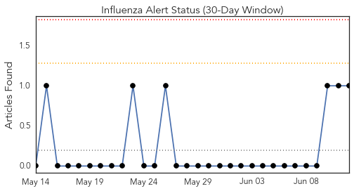
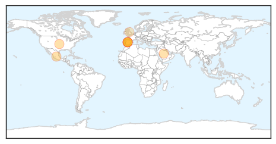
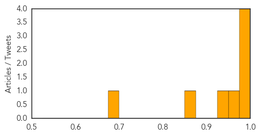
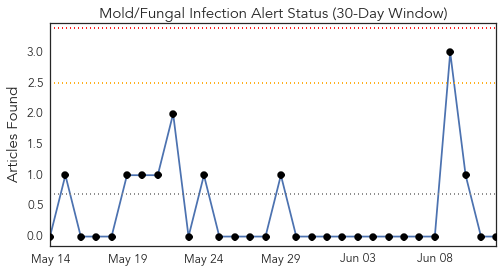
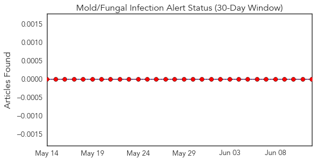
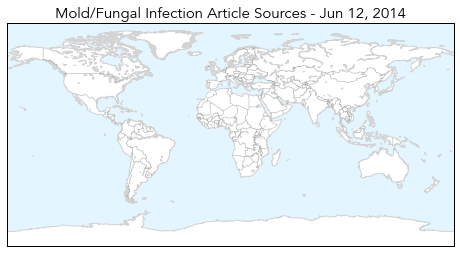
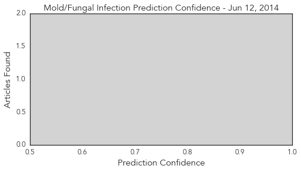

Influenza
30-Day Web Trend
0 alerts, 0 warnings

30-Day Twitter Trend
0 alerts, 0 warnings

Article Locations
Article Confidences
Top Articles:
- 0.998
- Scientist Makes Mutant, Infectious Flu Virus in Lab
- 0.996
- Emerging Flu Virus Resembles 1918 'Spanish Flu' Pandemic
- 0.996
- Key genes for Spanish flu pandemic exist in nature: report
- 0.985
- Researchers at UW lab create close copy of 'Spanish flu' pandemic virus
- 0.957
- Was it ‘crazy’ for this scientist to re-create a bird flu virus that killed 50 million people?
- 0.928
- Scientists recreate deadly Spanish flu
- 0.871
- Is It "Madness" to Rebuild a Flu Virus That Wiped Out 50 Million People?
- 0.693
- Scientists attack 'crazy' avian flu research
Top Tweets:
- 0.506
- RT: Almost 100 US kids. died of lab-confirm influenza 2013-14 flu seasn http://t.co/gAk5D1nOlx wd vax have prevented some?
Mold/Fungal
30-Day Web Trend
0 alerts, 0 warnings

30-Day Twitter Trend
0 alerts, 0 warnings

Article Locations
Article Confidences
Top Articles:
-
No articles found for Jun 12, 2014
Top Tweets:
-
No tweets found for Jun 12, 2014